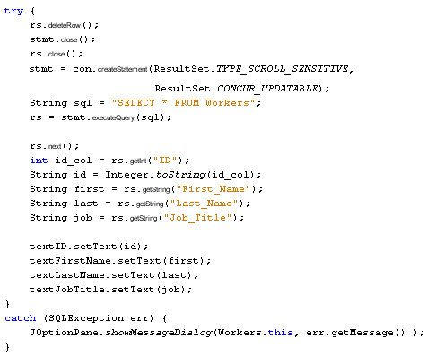

rs.deleteRow( );
However, the Driver we are using, the ClientDriver, leaves a blank row in place of the data that was deleted. If you try to move to that row using your Next or Previous buttons, the ID Text Field will have a 0 in it, and all the others will be blank.
To solve this problem we'll first delete a row then, again, close the Statement object and the ResultSet objects. We can then reload all the data in the Text Fields. That way, we won't have any blank rows.
Here's the code to add for your Delete Record button:

Run your programme and test it out. You now be able to delete records from your database.
And that's it - you now have the basic knowledge to write a database programme in Java using a GUI. Congratulations, if you got this far!